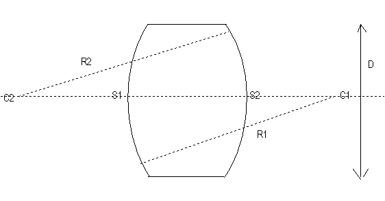

Cette page reprend l'aide d'OptGeo 3.03, écrite pour un ordinateur et une souris, adaptée à la version web : les gestes (au doigt ou à la souris), les boutons et les menus décrits sont ceux de cette version. Mode d'emploi détaillé : Utiliser OptGeo sur le web.
Lentille

Définition
C'est le milieu compris entre deux portions de sphère ; il faut se donner les sommets S1 et S2 des deux faces de la lentille, et les centres de courbure C1 et C2 de ces faces (ou les rayons de courbure R1 et R2) ; et les indices de réfraction. Et le diamètre D de la lentille.
La lentille peut être ajoutée :
- en touchant (ou en cliquant) le bouton « Lentille épaisse » de la palette des objets (famille « Lentilles et dioptres »), puis en plaçant chacun des sommets, puis chacun des centres de courbure (ils sont automatiquement ramenés sur l'axe S1S2), et enfin en saisissant le diamètre de la lentille (voir Placer un objet).
OU
- menu « Ajouter (par coordonnées) », puis « Lentille épaisse » (sous « Système optique réel ») : le panneau des propriétés s'ouvre, déjà rempli, et le bouton « Valider » ajoute l'élément.
Options
On peut imposer
- la couleur à l'écran de la lentille
- les indices de réfraction dans le bleu, le vert et le rouge ; par défaut, les valeurs 1,8 1,6 et 1,4 sont attribuées. On peut aussi choisir directement un matériau dans une liste qui comprend quelques verres, l'eau, et des plastiques optiques. Plus précisément, les indices sont donnés pour les longueurs d'onde de référence suivantes : 486,1 nm, 587,6 nm et 656,3 nm. Voir la liste des matériaux et de leurs indices.
- les conditions d'existence d'un rayon réfléchi, dans le sens entrant et dans le sens sortant ; le rayon réfléchi peut exister « Toujours », « Jamais », « Seulement si le réfracté existe », « Seulement si le réfracté n'existe pas » (choix de la partie « Rayon réfléchi » du panneau des propriétés). Lorsqu'il y a à la fois un rayon transmis et un rayon réfléchi, le rayon réfléchi est un « rayon enfant », terminologie utilisée dans la définition du rayon unique, de la source ponctuelle, et de l'onde plane.
Remarque : si la lentille est à bords minces et qu'on impose un diamètre plus grand que son diamètre « naturel », la valeur du diamètre est automatiquement ramenée à la valeur « naturelle ».
Ces propriétés peuvent être rendues accessibles :
- à la construction de la lentille si on passe par le menu « Ajouter (par coordonnées) »
- à tout instant en touchant (ou en cliquant) l'élément pour le sélectionner, puis le bouton « Propriétés » de la barre de sélection (en bas du dessin, ou en haut si elle cachait l'élément) ; le panneau des propriétés s'ouvre, son bouton « Valider » applique les modifications et « Annuler » les abandonne. On peut aussi toucher le bouton « Propriétés » de la barre du haut, puis l'élément : ce mode reste actif jusqu'au bouton « Terminer » du bandeau de consigne (ou la touche Échap).
Divers
On peut demander que la normale à la lentille soit tracée à chaque point d'intersection d'un rayon lumineux avec cette lentille :
- menu « Options », vérifier que « Afficher les normales » est coché
OU
- bouton « Affichage » de la barre du haut, interrupteur « Normales »
On peut aussi demander que les angles d'incidence et de réfraction soient affichés (en °) :
- menu « Options », vérifier que « Afficher les angles » est coché
OU
- bouton « Affichage » de la barre du haut, interrupteur « Angles d'incidence et de réfraction »
L'angle de réflexion n'est pas affiché, afin de ne pas surcharger les représentations.
Le nombre de décimales sur les angles est fixé dans la boîte de dialogue des options des normales : menu « Options » puis « Options des normales »